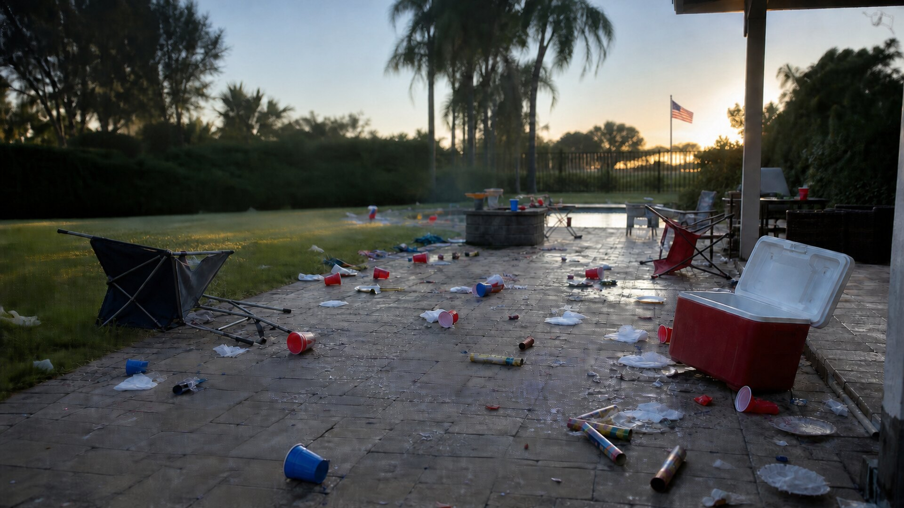
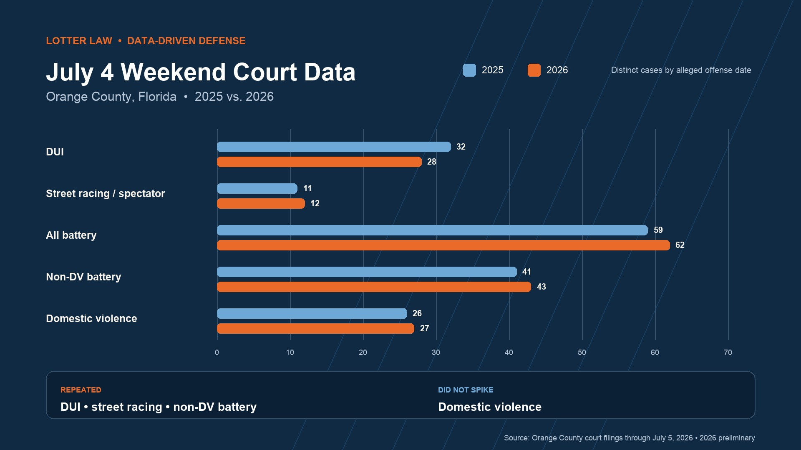

Orange County July 4 Court Data: DUI, Racing and DV
| By Jeff Lotter, Esq.

The July Fourth numbers do not tell one simple story. Orange County court data shows a sharp increase in DUI and street-racing matters, a rise in non-domestic battery, and an open-container filing surge that mostly occurred before the holiday itself. Domestic-violence volume, meanwhile, stayed close to normal.
That difference matters. A headline about “holiday arrests” can blur together arrest dates, filing dates, citations, and charges. A careful defense review does the opposite: it separates the timelines, identifies the governing statute, and tests the evidence in the individual case.
These numbers use two different clocks
Filing-week totals count distinct cases entering the Orange County court record from June 29 through July 5, 2026. The July 4 comparison uses the alleged offense date and is preliminary because additional July 4 matters may be filed after the July 5 data cutoff.
July 4 Compared With a Typical Saturday
The comparison below uses distinct Orange County cases by alleged offense date. “Typical Saturday” is the average of the prior 52 Saturdays. The bars use a common 20-case scale.
Preliminary July 4 offense-date comparison
Street racing / spectator
DUI
Non-DV battery
Domestic violence
Open container
Public intoxication
Did the Same Thing Happen Last Year?
In broad terms, yes. To account for July 4 moving from Friday in 2025 to Saturday in 2026, the fairest comparison is the full Friday-through-Sunday holiday weekend. DUI, street racing, and non-domestic battery were elevated around the holiday in both years. Domestic violence was below its normal weekend level in both years.

| Category | 2025 weekend | 2026 weekend | What repeated? |
|---|---|---|---|
| DUI | 32 | 28 | Elevated both years |
| Street racing / spectating | 11 | 12 | Similar weekend cluster |
| All battery | 59 | 62 | Nearly identical |
| Non-DV battery | 41 | 43 | Strongest repeated increase |
| Domestic violence | 26 | 27 | No holiday spike |
| Open container | 7 | 6 | No weekend spike |
| Public intoxication | 2 | 1 | No reliable signal |
| Fireworks / BUI | 0 | 0 | No qualifying filing signal |
The day-by-day timing changed. The 2025 street-racing cluster appeared on July 5, while the 2026 cluster appeared on July 4. DUI was more elevated relative to a normal weekend in 2025, even though the single-day July 4 count was higher in 2026. That is why comparing only the calendar date would exaggerate some differences and hide others.
Street Racing Was the Biggest Surprise
The preliminary July 4 data contains 12 distinct street-racing or spectator cases. Seven involve the spectator provision, while five involve driving or another form of participation. A typical Saturday produced about one such case, and no prior Saturday in the comparison period reached 12.
Under F.S. 316.191, Florida separately addresses driving, participating in, coordinating, and knowingly attending certain races or street takeovers. Presence near a car gathering is not automatically the same as knowingly attending an illegal race. Video, location data, messages, vehicle positioning, officer observations, and the person's conduct may all affect how the State tries to prove the allegation.
A filed charge is not proof of participation
Court data can identify a cluster worth examining. It cannot establish that any person drove, coordinated, or knowingly attended a race. Those are fact-specific questions that require the underlying reports, recordings, and other evidence.
DUI Was Up on Both Timelines
Nineteen DUI cases in the current dataset carry a July 4 offense date, compared with 8.9 on a typical Saturday. Only two of the prior 52 Saturdays were higher. On the filing timeline, 52 DUI cases entered the court record during the week, compared with a 37.9-case weekly baseline.
Those figures are broader than any single police operation. WKMG reported that a coordinated operation involving nearly 100 officers from 10 agencies produced three reported DUI arrests and 31 citations. The operation-specific results and the broader court-filing totals measure different groups and should not be added together.
A DUI filing also does not answer whether the stop was lawful or the evidence is reliable. Lotter Law's July Fourth DUI evidence guide explains why body-camera video, driving footage, roadside exercises, breath-testing records, and the administrative license timeline must be reviewed separately.
Battery Increased, but DV Stayed Near Normal
The filing week contained 122 battery cases, up from a 106.1 weekly average. The sharper movement came from non-domestic battery: 63 cases versus a 45.6 baseline. Domestic battery was slightly below its normal weekly level, and the broader domestic-violence flag was almost unchanged at 80 cases versus 79.2.
That result does not minimize any individual DV allegation. It means the current data does not support a generalized headline that domestic violence surged during the holiday week. It also reinforces why Florida battery cases need precise classification. A reader facing an allegation can review what the State must prove in a simple battery case and why self-defense, witness credibility, video, and the relationship between the parties can change the legal analysis.
Open-Container Filings Tell a Different Story
Open-container matters produced the largest percentage increase on the filing-week comparison: 42 cases versus a 19.0 weekly average. But only three matched cases in the current dataset carry a July 4 offense date, slightly below the 3.8 typical-Saturday average.
Most of the week's matched matters were Orlando ordinance cases spread across June 28 through July 3. They involved public-property and parking-lot provisions under Orlando Code Chapter 33, not merely Florida's vehicle open-container law in F.S. 316.1936. The accurate statement is that holiday-week filings increased—not that July 4 arrests spiked.
What Did Not Produce a Reliable Signal
- Domestic violence: Overall filing volume stayed almost exactly at its prior-year weekly average.
- Public intoxication: One filing-week case is too small to establish a trend. Florida's offense is technically disorderly intoxication under F.S. 856.011, which requires more than merely having consumed alcohol.
- Fireworks: No qualifying fireworks charge appeared under the current filter. That is not proof that no incidents occurred. Florida also treats July 4 as a designated fireworks holiday under F.S. 791.08, subject to other state and local rules.
- BUI: No BUI charge appeared in the current release. Other boating filings largely involved earlier June offense dates and should not be presented as July Fourth BUI enforcement.
- Discharging a firearm: One July 4 case is too small to support a trend claim.
How Lotter Law Uses Data in an Individual Case
Aggregate court data is not a shortcut to a legal result. It provides context and helps identify the questions worth asking. In an individual matter, the useful work happens at the evidence level: building a timeline, matching each charge to its statute, organizing body-camera and dash-camera recordings, comparing officer observations with the video, and tracking missing or inconsistent discovery.
A structured defense review may compare
- The alleged offense time, arrest time, booking time, and court filing date.
- Every charge description against the actual statute and required elements.
- Body-camera, dash-camera, business video, dispatch records, and written reports.
- Which officer or agency supplied each observation or item of evidence.
- Whether testing records, citations, photographs, and witness accounts fit the same timeline.
- Whether a broader enforcement operation affected documentation, assignments, or available video.
Data does not guarantee a dismissal, reduction, or acquittal. It helps prevent the case from being reduced to a label. That same approach is reflected in Lotter Law's recent Super Speeder media analysis and case-result discussions, where the allegation had to be tested against admissible evidence rather than accepted at face value.
Explore the underlying public-data project
The aggregate comparisons in this article were developed through Lotter Blotter, a public Orange County court-data dashboard created by Jeff Lotter. The dashboard provides context; the defense of a specific case still depends on its facts, evidence, and applicable law.
Facing a Criminal or Traffic Charge in Central Florida?
Lotter Law can review the charge, reports, recordings, testing records, and procedural history with you. Every case is different, and an early evidence review can help identify deadlines and disputed issues.
Call (407) 500-7000 for a free consultation.
Sources and Method
- Orange County court-filings current state generated July 6, 2026, with public records through July 5.
- Filing-week comparison: distinct cases filed June 29–July 5 against the prior 52 complete Monday-through-Sunday weeks.
- July 4 comparison: distinct cases carrying an alleged offense date of July 4 against the prior 52 Saturdays.
- F.S. 316.191 — Racing on Highways, Street Takeovers, and Stunt Driving.
- F.S. 316.1936 — Open Containers in Vehicles.
- F.S. 856.011 — Disorderly Intoxication.
- F.S. 791.08 — Fireworks Use During Designated Holidays.

Jeff Lotter
Criminal Defense Attorney | Former State Trooper
Jeff Lotter is an Orlando criminal defense attorney and former Florida State Trooper. He uses law-enforcement experience, courtroom practice, and structured evidence analysis to evaluate criminal and traffic cases throughout Central Florida.